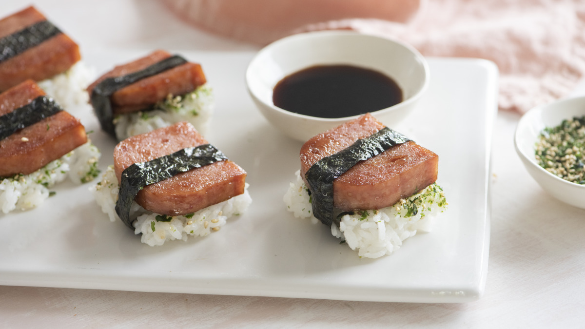
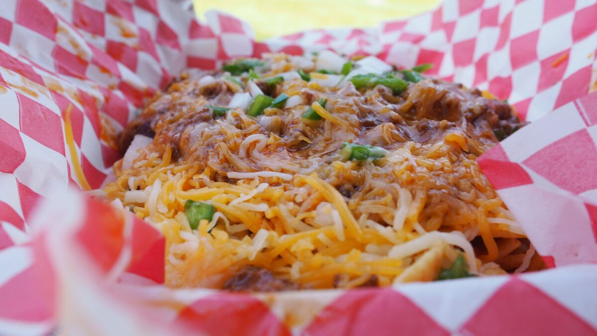
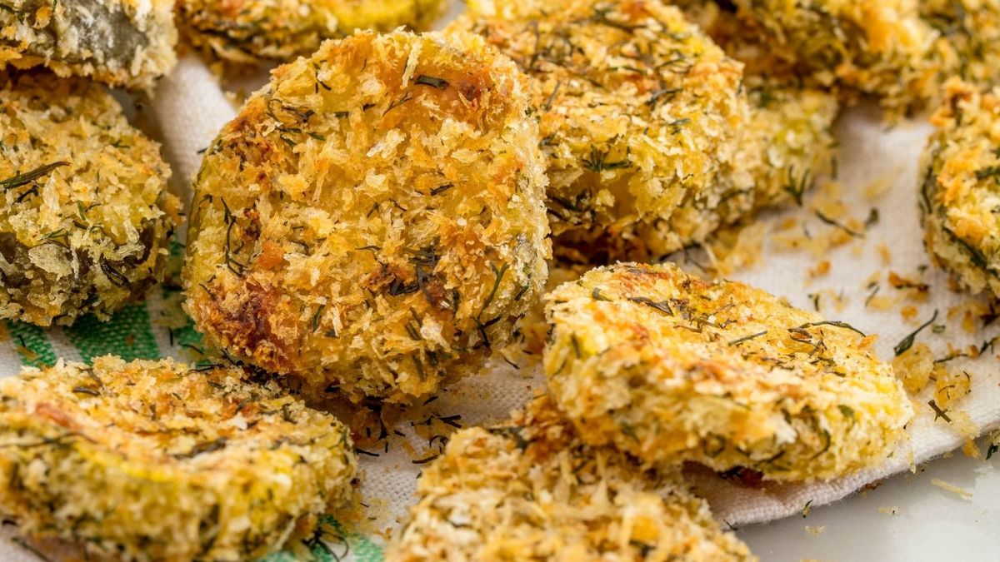

The Kooky Appetizers!
FANCY SPAN MUSUBI

Ingredients
- 12 ounces spam
- 2 cups of hot cooked steamed rice
- 1/4 cup bonito flakes
- 1/4 cup soy sauce
- 1/4 cup white sugar
- 1/4 cup rice wine
- Nori
Directions
- Take the Spam out of the can and slice it into 8 slices. Wash the container and set aside for later use.
- In a skillet, heat the soy sauce, rice wine and sugar until the mixture bubbles. Turn the heat to low and pan fry the slices of Spam, turning often. Remove and let cool.
- Spread the hot rice about an inch thick. Sprinkle generously with the furikake until most of the surface is covered. Quickly stir the rice so that the furikake is distributed throughout. The warmer the rice, the easier this step is.
- Line the inside of the Spam can with plastic wrap. Using a small spoon, scoop the rice into the container, packing down firmly after each scoop. Let it chill in the refrigerator for 10 minutes.
- Pull the rice out of the container by the plastic wrap, and slice it into 8 slices. This is easier to do if you dip the knife in water.
- Top each slice of rice with a slice of Spam
- Cut the nori into 1/2 inch strips. Wrap around, making the ends meet at the bottom. Use a little bit of water to make the ends stick together.
- Enjoy!
FRITO PIE

Ingredients
- 1 cup of Fritos
- 1 cup of prepared chili
- 1/4 cup of shredded cheddar cheese
- 1 teaspoons of chooped onions
- 1 teaspoon of chives
- Mustard
Directions
- Assemble by heating chili until warm either in a pot on the stove or in a microwave.
- Place Frito chips in a bowl, pour over chili then top with the cheese, onions, and chives if desired.
- Finish with a squirt of mustard.
- Enjoy!
OVEN BAKED "FRIED" PICKLES

Ingredients
- 24 ounce jar of pickles slices
- 2 eggs
- 1/3 cup of flour
- 1 tablespoon of Worcestershire sauce
- 1 teaspoon of hot sauce
- 1 teaspoon of garlic powder
- 1 teaspoon of cajun seasoning
- 1 teaspoon of pepper
- 3/2 cups of Panko breadcrumbs
Directions
- Turn oven broiler on high.
- In a medium bowl, whisk together eggs and flour.
- Add Worcestershire sauce, hot sauce, garlic powder, Cajun seasoning, and pepper. Mix well.
- Place panko bread crumbs in a shallow dish.
- Dunk each pickle slice into the egg mixture, than dredge it in the panko bread crumbs.
- Place coated pickles on a rack set above a baking sheet and sprayed with non-stick cooking spray.
- Place pan in the middle rack of the oven. Broil for about 3 minutes on each side.
- Serve with Ranch dressing and a dash of hot sauce.
- Enjoy!